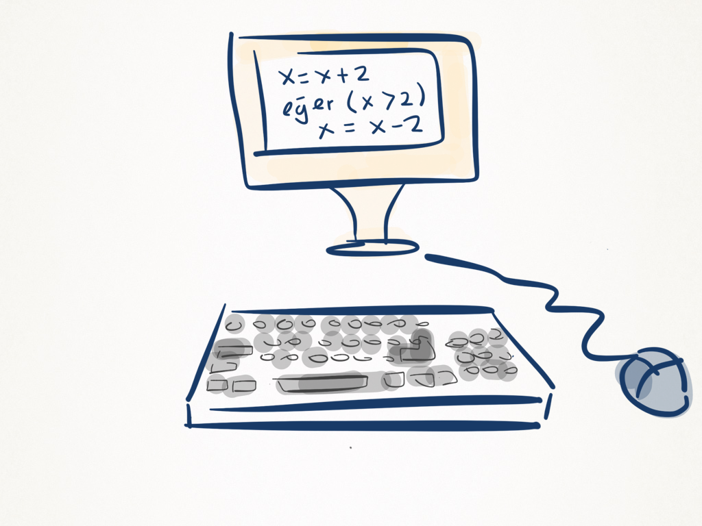
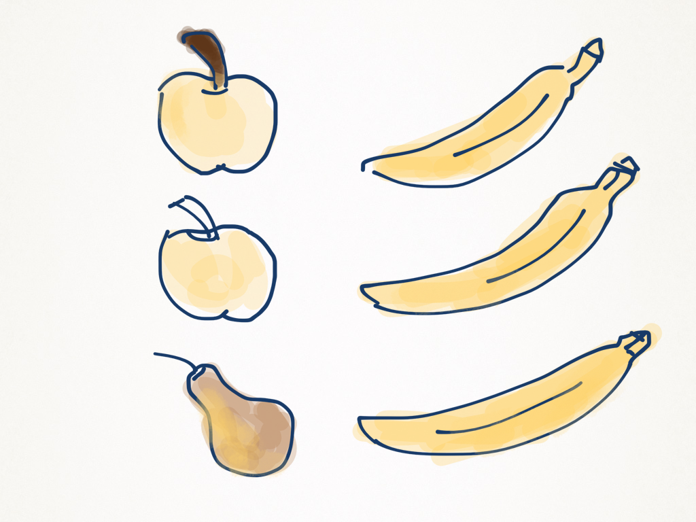
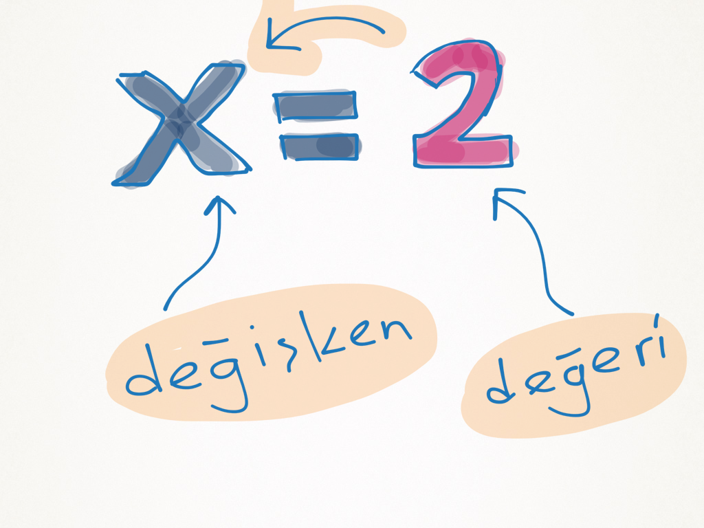
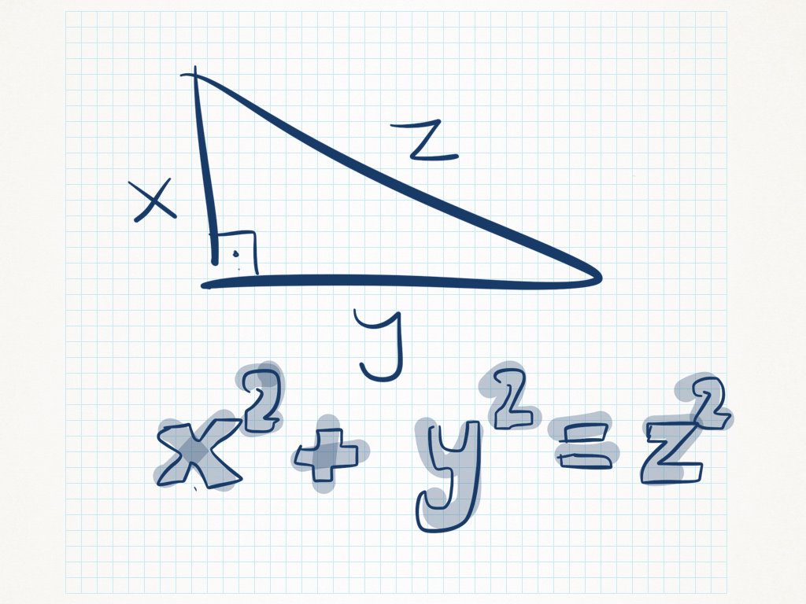

Programlamaya Giriş
Programlamanın mantığını Türkçe ve görerek öğrenmek için ilk adım.
Bu sayfayı ziyaret ettiğinize göre programlama işine meraklısınız demektir. Bu platform, diğerlerinden farklı olarak programlamanın mantığını Türk'lerin ana dili olan Türkçe ile anlatmayı amaçlamaktadır.

Öncelikle bir bilgisayar programını çalıştırmak için programı bir yazı editöründe yazmış olmamız gerekmektedir (burada editör web sayfasıdır). Sonrasında ise, program derleyiciler ya da yorumlayıcılar ile çalıştırılabilir hale dönüşür. Bu site çalıştırılabilir dosya üretmekten daha çok programın çalışma mantığını görselleştirerek anlatmaya yönelik olarak hazırlanmıştır.
Aşağıdaki konuları okuyup uygulayarak ilk programlarınızı geliştirebilirsiniz. Burada yer alan tüm programlar Kodlama Sayfası'nda çalışmaktadır: her örneğin üstündeki ▶ Kodlama sayfasında dene düğmesine basarak kodu açabilir, adım adım nasıl çalıştığını izleyebilirsiniz.
Değişkenler
Değerlerimizi saklayan ve program ilerledikçe değişebilen isimli kutular.
Programlama yaparken değişken isimli yapılar bizim değerlerimizi sakladığımız ve program ilerlerken farklı değerleri de saklaması mümkün olabilen temel nesnelerdir. Program boyunca farklı tipteki veriler bellekte tutulmalıdır.

İşte, verilerin bellekteki yerlerine ulaşmak değişken denilen bu isimleri kullanmakla mümkündür. Değişkenlere bu ismin verilmesinin nedeni bellekte saklanan değerlerin programın çalışması esnasında değiştirilebilmesidir.
Değişken İşlemleri
Şeklinde bir kod ile program puan isminde bir değişken oluşturur ve içerisinde 90 sayı değerini saklar. Bu kod çalıştıktan sonra, bilgisayarın belleğinde bu sayının tutulması için bir hücre oluşturulur ve bu değer biz değiştirene veya program bitene kadar bu hücrede saklanır.
Değişkenlerin nasıl kullanıldığını birkaç örnek kod inceledikten sonra anlıyor olacaksınız. Varsayalım ki dolabımızı açtık, birtakım meyveler var. Bunların kaç tane olduğunu programımız ile bulalım. Haydi, sahip olduğumuz toplam meyvelerin sayısını bulan programı beraber yazalım.
Gördüğünüz gibi elimizde 3 çeşit meyve var. 1-3. satırlardaki kodlar ile her bir meyvenin miktarını = işareti kullanarak meyvenin isminde saklıyoruz. 5. satırda ise toplam meyve sayımızı bulabilmek için bunları toplayıp yaz isimli komutu kullanarak ekrana yazdırıyoruz.
Tebrikler! İlk programınızı yazmış oldunuz. 🎉
Atama Komutları
Bir önceki programımızda da aslında fark ettiğiniz üzere, 3 farklı meyve isminde değişkenler oluşturduk. Bunlar sırasıyla her bir meyveden kaç adet olduğunu içlerinde sakladılar. Değişkenler tanımlandığı anda değerler verdik ve toplama işlemine alındıklarında bu değerler ile işlem gördüler.
Atama işleminin belli bir kuralı vardır ve buna programlama dilinde söz dizimi (syntax) adını veririz. Atama işleminin söz dizimi şu şekildedir:

değişken değişkenAdı = değer
Bu ifade tarzı biraz kafa karıştırabilir. Matematiksel eşitlik (=) anlamına gelen atama işlemi programlamada “sağdakini al, bunu solda gördüğün değişkenin içine koy” demektir.
Gelin işleri biraz daha karmaşık hale getirelim. Örneklerle devam ediyoruz.
Burada ne yaptık? Yine 3 farklı değişken oluşturduk, ama bu sefer değişkenler sabit değerlerle başlamadılar, aksine bir önce tanımlanan değişkenin değerine bağlı bir değerle başladılar. a değişkeni 5 değeri ile başladı. Ardından b bunun 3 fazlası olan 8 değerini aldı. c ise bunların farkına sahip oldu.
Temel İşleçler (Operatörler)
Hesap yapmak, karşılaştırmak ve koşulları birleştirmek için kullanılan semboller.
Matematik İşleçleri (+, -, *, /)
Aritmetik işleçler matematiksel işlemleri yapmamıza yarayan temel işleçlerdir. Yukarıdaki programlarda gördüğünüz üzere toplama (+) ve çıkarma (-) işlemlerini zaten kullanmıştık. Matematiksel işleçlerin nasıl çalıştığını örneklemek üzere gelin farklı bir program yazalım.

Örnek 1: Yurtdışından dolar para birimi üzerinden satılan birkaç ürün almak isteyelim. Bunların TL karşılığında neye tekabül ettiğini bulalım. Tabii ki doların TL karşılığını değişken değeri olarak vereceğiz. Almak istediğimiz ürünlerin de dolar cinsinden tutarına sahibiz.
saatFiyati adlı değişken almak istediğimiz saatin dolar cinsinden tutarını, telefonFiyati değişkeni ise almak istediğimiz telefonun dolar cinsinden tutarını içerisinde tutmaktadır.
Programımız yurtdışından almak istediğimiz bu iki ürün için o günkü dolar kuru olan 3.45 TL karşılığı ile alışveriş sonrasında harcamamız gereken toplam tutarı hesapladı.
Örnek 2: Kendi arabamızın ya da aile arabamızın ne kadar yaktığını hesaplayalım. Varsayalım ki babanız sizden böyle bir program yazmanızı istedi. Genel yaklaşım -ya da algoritma diyelim- şu şekilde olabilir: Bir miktar yol kat ederiz, bunun bir şekilde kaydını tutarız, o sırada ne kadar tutarda yakıt harcadığımızı tespit ederiz. Örneğin, 236 km yol aldık ve 75 TL yakıt harcadık. Hadi 1 km yolu ne kadarlık yakıtla kat ettiğimizi bulalım.
Kodumuz kat ettiğimiz toplam yolu toplamYol adlı değişkende, bu yol kat edildiğinde harcanan tutarı ise toplamTutar adlı değişkende saklamakta ve toplamTutar / toplamYol ile bölme işlemini yapıp sonucu fiyat değişkeninde saklamaktadır. Her zamanki gibi bunu da yaz komutu ile yazdırmaktayız.
İlişkisel İşleçler (eşit, küçük, büyük)
Aslında ortaokuldan beri aşina olduğumuz bir konudur ilişkisel işleçler. Öncelikle, 6. sınıftan itibaren denklem çözmeyi öğrenmeye başlarız. Denklem çözerken denklemin 2 tarafının (eşitlik = ifadesinin sağı ve solu) birbirine eşit olduğunu kabul ederiz, denklemimizin bilinmeyenlerini bulmaya çalışırız. Sonrasında 7. ve 8. sınıfta da eşitsizlikler konusunu öğreniriz. <, >, >= sembolleriyle de eşitsizlikleri çözmeye çalışırız. Denklemlerin çözüm yolları benzerlik gösterse de, denklemler ve eşitsizlikler farklı yorumlanır. Ortaokul yıllarına kısa bir gezinti yaptıktan sonra bu ifadelerin kodlama açısından neler ifade ettiğine bakalım.
Eşit “==”
İlişkisel eşitlik sembolü, sağındaki ve solundaki ifadelerin eşitliğini kontrol eder. Eğer eşitlik varsa doğru döndürür. Şimdi bununla alakalı olarak bir kodlama denemesi yapalım.
Bir yaş değişkeni oluşturalım ve bu komutu deneyelim. Kodlama sayfasında çalıştırdığımızda, sağdaki panelde 2. satırın sonucu olarak doğru ya da yanlış göreceğiz. Eğer yaş değeri 18'e eşit ise doğru, diğer durumda ise yanlış yazdığını göreceğiz. Farklı değerlerle deneyelim ve bu işlecin nasıl çalıştığını anlayalım.
Eşit değil “!=”
Bazen de iki ifadenin birbirine eşit olmadığını sorgulamak isteyebiliriz. Bu durumda eşittir sembolünün sol tarafına bir “!” işareti koyarız. Sırada ilişkisel küçük var. Burada da bir karşılaştırma söz konusu.
Küçük “<”
Soldaki ifadenin sağdakinden küçük olup olmadığını kontrol eder. Doğru ya da yanlış değerini döndürür.
Büyük “>”
Soldaki ifadenin sağdakinden büyük olup olmadığını kontrol eder. Doğru ya da yanlış değerini döndürür.
Büyük eşit “>=” ve küçük eşit “<=”
Bazı durumlarda hem büyüklük hem de eşitlik önemli olabilir. Örneğin bir kişinin yaşının 18'den büyük ya da 18'e eşit olduğunu kontrol etmek istersek bunu önce büyüktür, sonra eşittir işareti ile yapabiliriz. Şöyle:
İlişkisel ifadelerin seçme komutlarında kullanımı
İlişkisel komutlar tek başına doğru ya da yanlış değerini döndürür. Bu bilgi seçme ya da döngü komutlarında daha işe yarar hale bürünür. Nasıl mı? O zaman aşağıdaki örnek koda bakalım. Bu, nasıl çalıştığı hakkında biraz bilgi verecektir. Bununla alakalı detaylı bilgiyi 4. Seçme Komutları bölümünde görüyor olacağız.
Özetleyecek olursak:
| İşleç | Türkçe yazımı | Anlamı |
|---|---|---|
| < | küçük | küçüktür |
| > | büyük | büyüktür |
| == | eşit | eşittir |
| >= | büyükeşit | büyük ya da eşittir |
| <= | küçükeşit | küçük ya da eşittir |
| != | eşitdeğil | eşit değildir |
Mantıksal İşleçler (ve, veya, değil)
İlişkisel ifadeleri mantık işleçleri ile birbirine bağlayabiliriz. İsterseniz öncelikle basit mantık kurallarını bir hatırlayalım:
| İşleç | Sembolü | Anlamı |
|---|---|---|
| ve | && | Her iki ifade birlikte doğru olunca doğru olur |
| veya | || | İki ifadeden birisinin doğru olması yeterli |
| değil | ! | Doğruysa yanlışa, yanlışsa doğruya dönüşür |
Bir de kod örnekleri ve bunların anlamına bakalım:
| İşleç | Örnek kullanımı | Anlamı |
|---|---|---|
| ve | yaş >= 18 ve para >= 2000 | Yaş en az 18 ve en az 2000 TL para |
| veya | yaş >= 18 veya öğrenim_türü >= 3 | Yaş en az 18 veya en az lise mezunu |
| değil | değil (yaş >= 18) | Yaş 18'den küçük |
Kodlarımızı aşağıdaki örnekte ▶ Kodlama sayfasında dene düğmesine basarak deneyebiliriz:
Son satırdaki ifade için doğru ya da yanlış değerinin üretildiğine dikkat edelim. yaş ya da para değerleri üzerinde değişiklik yapabilir, sonuçları gözlemleyebiliriz.
Diğer bir örnek: Kişinin yaşının 20 ile 30 arasında olup olmadığını anlayan programı geliştirelim:
Burada 2. satırda ve mantıksal işlecini kullanarak bunu başarabiliriz. Bu işleç sağdaki ve soldaki iki ifadenin de birden doğru olması durumunda doğru sonucunu üretecektir. Aksi durumda, yani en az birisinin yanlış olması (yaşın 10 ya da 40 olması gibi) durumunda yanlış sonucunu alıyor olacağız.
Girdi ve Çıktı Komutları
Programların dış dünyayla iletişim kurma yolları.
Elbette programlar çalışırken etraflarındaki insanlar ile iletişim halindedir. Bazen onlardan veri alırlar, bazen de değişik iletişim araçları ile kullanıcıya veri çıktısı verirler. Örneğin klavye, fare gibi çevre birimleri ile bilgisayarlar bizden veri alırken; ekran, hoparlör ya da titreşim kaynağı gibi çevre birimleri ile de bize veri aktarırlar.
Girdi Komutları
Bu kısım geliştirme aşamasındadır.
Çıktı Komutları
Çıktı komutu olan yaz komutu aldığı değeri konsol ekranına yazar. Aşağıdaki gibi bir söz dizimi vardır:
yaz değişken
Kodlama sayfasında bir değişkene değer atandığında değeri zaten sağdaki Hafıza panelinde görüntülenir; ama bazı değerlerin konsolda görüntülenmesi daha uygun olabileceğinden yaz komutu geliştirilmiştir. Metinleri ve değerleri + ile birleştirerek de yazdırabiliriz:
Seçme Komutları
eğer ve değilse ile programın hangi yoldan gideceğine karar vermek.
Programımızın bazen olası kodlar arasında seçim yapmasını isteyebiliriz. Yani yukarıdan aşağı doğru bütün kodların çalışması, istediğimiz bir program çalışma düzeni olmayabilir. Dolayısıyla eğer ve değilse komutları bu noktada aradığımız komutlardır. eğer komutunun ardından gelen parantezlerin arasına doğruluğu kontrol edilecek olan ilişkisel komut yazılır. Doğruysa eğer'in ardındaki kısım, yanlışsa değilse kısmı çalışır. Zaten adı üzerinde, gayet anlaşılır değil mi?
Şöyle bir söz dizimi kuralını verelim:
eğer(ilişkisel komut) doğruysa çalışacak komut değilse yanlışsa çalışacak komut
Yine örnekler üzerinden gidelim. Hatırlatmak gerekirse; bu kodları kodlama sayfasında açıp nasıl çalıştığını adım adım gözlemleyebiliriz.
Örnek 1: Öğretmenimiz bize bir sınav yapsın. Sınavdan önce şöyle bir şey desin: “80'den fazla not alanları ödüllendireceğim ve 10 puan ekstra vereceğim, altında alan her kişiden ise ceza amaçlı 5 puan kıracağım.” Kişinin son puan durumunu hesaplayan kodu yazalım.
Örnek 2: Ehliyet kursu yönetiyoruz. Öğrenciler bize ehliyet alabilmek için başvuruyor. Kodumuzun ehliyet başvuru sisteminde çalıştığını varsayalım. Kişinin yaş bilgisine göre “ehliyet alabilirsiniz” ya da “yaşınız ehliyet almaya yeterli değildir” gibi durum mesajlarını yazdırmak istiyoruz.
Örnek 3: 3 sayıdan en büyüğünü bulan programı yazalım. İş biraz da karmaşıklaşıyor…
Bu 3 sayıyı 3 değişken ile başlatıyoruz. İsimleri hatırlaması ve kullanması kolay olsun diye num1 gibi bir isim verdik. Diğerleri de bunun ismiyle ilişkili olarak değer aldı. -Unutmayın, iyi bir programcı değişken isimlerini anlamlı seçer- Sırasıyla değerlerini veriyoruz.
Bu kodu kodlama sayfasında açarak programın nasıl çalıştığına bakalım. Değişkenlerin ilk değerlerini değiştirerek kodun nasıl çalıştığını gözlemleyelim. Alternatif çözümler elbette var; bunlar üzerine düşünelim.
Döngü Komutları
Bir işi tekrar tekrar yaptırmak için yinele ve sayarakYinele.
yinele Komutu
Bu komut kodlarımızı yineleyerek, diğer bir ifadeyle tekrarlayarak çalışmasını sağlar. Bu yüzden adı da yinele. Bu komutun da eğer komutunda olduğu gibi çalışma şartı, parantez içindeki ilişkisel komutun doğru olmasıdır. Burası belli bir zaman sonra yanlış olacak ve döngümüz sonlanacaktır.
Şöyle bir söz dizimi kuralını verelim:
yinele(ilişkisel komut) doğru olduğu sürece çalışacak komut
Bu kodları kodlama sayfasında açıp deneyebiliriz. Kod görselleştirici, kodları görsel hale getirip çalışma mantığının daha iyi anlaşılmasını sağlayacaktır: döngünün her turunda koşulun nasıl hesaplandığını sağdaki panelde görebilirsiniz.
sayarakYinele Komutu
Eğer geçici bir değişkenle sayarak bir döngü kurmak istersek sayarakYinele aradığımız komuttur.
Şöyle bir söz dizimi kuralını verelim:
sayarakYinele(komut1, ilişkisel komut, komut2) doğru olduğu sürece çalışacak komut
komut1 geçici değişken oluşturma komutudur; bir sayı değeri ile ilk değer verilir. komut2 ise her döngü sonunda çalıştırılan komuttur. Aşağıdaki kodları görsel olarak görmek için denemeyi unutmayın.
Örnek kodumuz da şu şekilde:
Burada süslü parantezler var, bunlar ne diye soracak olabilirsiniz: döngüde birden fazla komutu tekrarlamak istediğimizde bu komutları { ve } arasına yazarız. Mantığını siz yakaladınız sanırım…